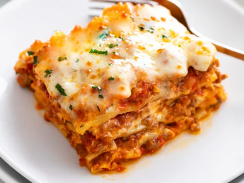

Lasagna recipe
Home

Description
Lasagna is a traditional Italian dish made of large, flat layers of pasta,
often interlaced with rich and tasty sauces. Most often, they are prepared
with a bolognese sauce made from ground meat, tomatoes and spices,
accompanied by béchamel (a creamy white sauce). The whole is topped with
cheese, usually parmesan and mozzarella.
Ingredients
For the meat sauce :
-
Onion, garlic, carrot and celery – for the flavour base, a soffrito;
- Beef
- Canned tomato and tomato paste
- Red wine – for extra flavour!
-
Seasonings – beef bouillon cubes (stock cubes), bay leaves, thyme,
oregano, Worcestershire sauce
For the white sauce, you need:
For assembling, you need:
- lasagna sheets – preferably fresh
- cheese !
Steps
Layering up!
-
Smear a bit of meat sauce on the base first – stops the
lasagna sheets from sliding around;
-
Layer 1 – top with meat sauce, bit of white sauce
-
Layer 2 – lay out more lasagna sheets, then top with
more meat sauce and more white sauce
-
Layer 3 – repeat again, lasagna sheets, meat sauce then
white sauce
-
Topping – cover with lasagna sheets, pour over
remaining white sauce then sprinkle with cheese.